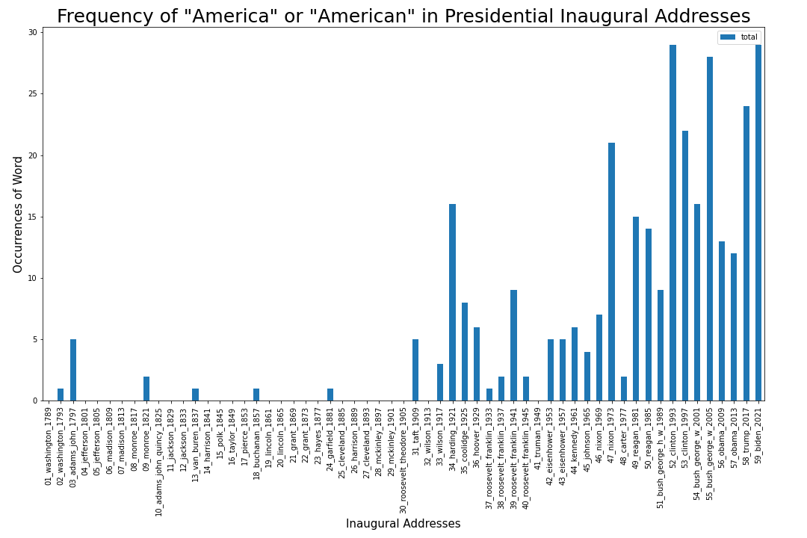

Finding Evidence and Examples — Workbook¶
Note: You can explore this workbook in the cloud via Binder.
In this workbook, we’re going to demonstrate you might find supporting evidence and illuminating examples to support your computational results.
We’re going to build off our previous work tracking the word “America” in U.S. Inaugural addresses.

“When Did the US Start Calling Itself ‘America,’ Anyway?”¶
Cultural analytics work often requires moving back and forth between programming, close reading, and humanistic research.
On Monday, we noticed that the word “America” seemed to increase in Presidents’ U.S. Inaugural Addresses over time. We also came up with a lot of interesting theories and hypotheses about why that might be the case.
But if this were a real research project, we would probably want to go further and do some research about what scholars and experts have to say on the topic, as well. For example, in “When Did the US Start Calling Itself ‘America,’ Anyway?”, historian Daniel Immerwahr argues:
It was the United States’ leap into overseas colonialism that changed things. After fighting a war with Spain in 1898, the United States annexed not only the Spanish colonies of the Philippines, Puerto Rico, and Guam, but also the non-Spanish lands of Hawai‘i and American Samoa.
This was its proud entrance into the imperial club, and the old names—the Republic, the Union, the United States—no longer seemed apt. It wasn’t a republic, it wasn’t a union (which suggests voluntary entry), and it included colonies as well as states…
Imperialism brought America to the fore.
Daniel Immerwahr, “When Did the US Start Calling Itself ‘America,’ Anyway?”
Make Word Count Plot¶
Import libraries and packages
from sklearn.feature_extraction.text import CountVectorizer
import pandas as pd
pd.options.display.max_rows = 200
pd.options.display.max_columns = 200
from pathlib import Path
import glob
Set the directory filepath that contains all the text files that we want to analyze
Use glob and Path to make a list of all the filepaths in that directory and a list of all the titles
directory_path = "../../texts/history/US_Inaugural_Addresses/"
text_files = glob.glob(f"{directory_path}/*.txt")
text_titles = [Path(text).stem for text in text_files]
To count all the words in these Inaugural Addresses, we’re going to use scikit-learn’s CountVectorizer.
#Initialize CountVectorizer with desired parameters
count_vectorizer= CountVectorizer(input='filename', stop_words= 'english')
#Plug in "text_files" to the initialized count_vectorizer
word_count_vector = count_vectorizer.fit_transform(text_files)
#Make a DataFrame out of the word count vector and sort by title
word_count_df = pd.DataFrame(word_count_vector.toarray(), index=text_titles, columns=count_vectorizer.get_feature_names())
word_count_df = word_count_df.sort_index()
word_count_df[['america', 'americans']]
Find the sum total of either “america” or “americans”
word_count_df[['america', 'americans']].sum(axis=1)
Make a smaller DataFrame of just “america” and “americans” and add a total column
america_df = word_count_df[['america', 'americans']].copy()
america_df['total'] = america_df[['america', 'americans']].sum(axis=1)
america_df
import matplotlib.pyplot as plt
ax = america_df.plot(y='total', figsize=(15,10), kind='bar')
plt.xlabel('Inaugural Addresses', fontsize = 15)
plt.ylabel('Occurrences of Word', fontsize = 15)
plt.title('Frequency of "America" or "American" in Presidential Inaugural Addresses', fontsize = 25)
plt.tight_layout()
ax.figure.savefig('America-Inaugural-Addresses.png')
Make Your Own Labels¶
If we wanted to make our own labels for the x-axis ticks, we could manually create a new list of labels.
new_labels = ['Washington 1789',
'Washington 1793',
'Adams 1797',
'Jefferson 1801',
'Jefferson 1805',
'Madison 1809',
'Madison 1813',
'Monroe 1817',
'Monroe 1821',
'Adams 1825',
'Jackson 1829',
'Jackson 1833',
'Van Buren 1837',
'Harrison 1841',
'Polk 1845',
'Taylor 1849',
'Pierce 1853',
'Buchanan 1857',
'Lincoln 1861',
'Lincoln 1865',
'Grant 1869',
'Grant 1873',
'Hayes 1877',
'Garfield 1881',
'Cleveland 1885',
'Harrison 1889',
'Cleveland 1893',
'McKinley 1897',
'McKinley 1901',
'Roosevelt 1905',
'Taft 1909',
'Wilson 1913',
'Wilson 1917',
'Harding 1921',
'Coolidge 1925',
'Hoover 1929',
'Roosevelt 1933',
'Roosevelt 1937',
'Roosevelt 1941',
'Roosevelt 1945',
'Truman 1949',
'Eisenhower 1953',
'Eisenhower 1957',
'Kennedy 1961',
'Johnson 1965',
'Nixon 1969',
'Nixon 1973',
'Carter 1977',
'Reagan 1981',
'Reagan 1985',
'Bush 1989',
'Clinton 1993',
'Clinton 1997',
'Bush 2001',
'Bush 2005',
'Obama 2009',
'Obama 2013',
'Trump 2017',
'Biden 2021']
Then we could add the new labels as shown below.
ax = america_df.plot(y='total', figsize=(15,10), kind='bar')
plt.xlabel('Inaugural Addresses', fontsize = 15)
plt.ylabel('Occurrences of Word', fontsize = 15)
plt.title('Frequency of "America" or "Americans" in Presidential Inaugural Addresses', fontsize = 25)
# Add new x axis labels!
locs, labels = plt.xticks()
plt.xticks(locs, new_labels)
plt.tight_layout()
Just for reference, let’s see how often the word “states” is mentioned.
ax = word_count_df.plot(y='states', figsize=(15,10), kind='bar', color='orange')
plt.xlabel('Inaugural Addresses', fontsize = 15)
plt.ylabel('Occurrences of Word', fontsize = 15)
plt.title('Frequency of "States" in Presidential Inaugural Addresses', fontsize = 25)
# Add new x axis labels!
locs, labels = plt.xticks()
plt.xticks(locs, new_labels)
plt.tight_layout()
Your Turn! — Find Supporting Evidence & Illuminating Examples¶
Let’s try to find some evidence or examples of the way “America” is being used in U.S. Inaugural Addresses, keeping in mind Daniel Immerwahr’s argument that “Imperialism brought America to the fore”.
We can read through the addresses by opening them and printing them in this notebook, or we can read the Inaugural Addresesses on the web here.
Here’s George Bush’s 2005 address, one of the addresses that uses “America” most often:
print(open("../../texts/history/US_Inaugural_Addresses/55_bush_george_w_2005.txt").read())
For Example…¶
Find an example and complete the “for example” sentence(s) below:
The figure below shows that references to “America” and “Americans” seem to increase in U.S. Inaugural Addresses over time, especially increasing after 1900.
As Daniel Immerwahr has argued, this pattern may be related to the rise of U.S. imperialism in the 20th century.
For example, in President George Bush’s 2005 address, he…